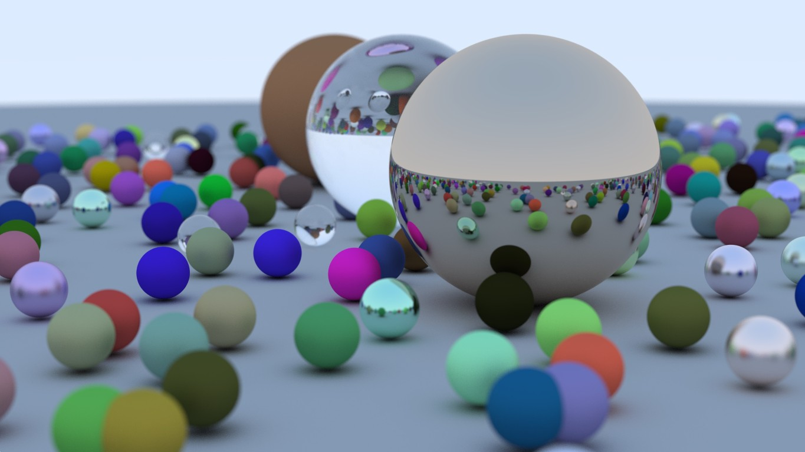

Final render of random shapes using a ray tracer
Image Credit:
RayTracingInOneWeekend
Welcome to Exploring Computer Graphics!
Take a glimpse and understand how computers, math, and creativity come together in order to shape the visual world.
This website offers a brief introduction to the field of Computer Graphics. It's goal is to provide a quick overview of key concepts,
techniques, and real-world applications that make computer graphics one of the most prominent fields in tech. It will also
delve into the future of Computer Graphics.
What is Computer Graphics?
Computer graphics, like the term suggests, is the process of creating imagery using computer programs and tools. In order to successfully create computer graphics, you have to understand the fundamentals of design and how to work with computer software to apply texture mapping, shadows, color, and more.
Face of a man created in Animation Software
Image Credit:
Flickr
Why computer graphics?
The field of computer graphics has influenced much of humanity’s daily lives, empowering designers to create dynamic visuals and expand the possibilities across numerous industries.
For example, in medical imaging, computer graphics help doctors interpret data from magnetic resonance imaging (MRI) and other tests. In engineering, it replaces physical models and prototypes to speed the design process. Additionally, computer graphics paved the way for emerging technologies like virtual reality, a simulated environment that only exists within computers or online spaces.